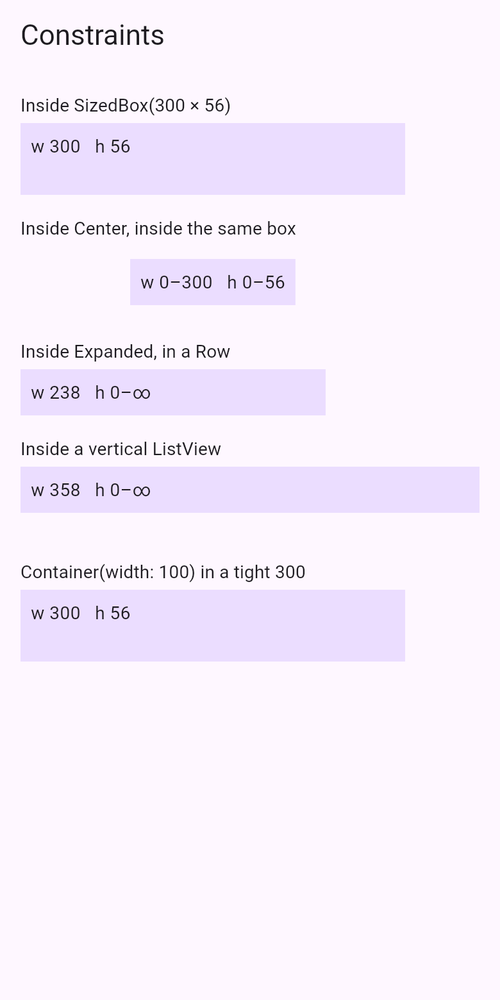

Chapter 1
How Flutter Really Renders
In this chapter you will learn to
- see the three trees behind every screen: widgets, elements and render objects
- follow one frame from
setStateto pixels, and know what each step costs - predict which widgets rebuild, and keep that number small with
constand local state - read layout as “constraints go down, sizes go up, the parent sets the position”
- use keys to keep state where it belongs, and repaint boundaries to keep painting cheap
- prove all of this with tests that count builds and paints
In Book 5 you wrote widgets and Flutter drew them. That was enough to build apps. It is not enough to know why a list stutters, why a text field loses what was typed when the screen changes, or why a widget ignores the width you gave it. All three have the same answer: what Flutter does with your widgets after build returns. This chapter opens the box, and every claim in it is measured by a test.
Bit
Nothing in this chapter is a rule of thumb. Every number, from rebuilds to paints, was counted by the tests you will see, on the machine that made the book. Change the code, run the tests, and watch the numbers change.
1.1 Three trees
A widget is not what you see on the screen. It is a description: a small, immutable object that says what should be there. Flutter keeps two more trees beside the widgets:
- An element is a widget’s place in the live tree. It is created once, keeps its position, holds the
Stateof a stateful widget, and is reused when a new widget of the same kind arrives at the same place. - A render object does the real work: it measures itself, positions its children, and paints. Only some widgets have one.
A test can walk the elements of a small screen and print all three, one line per element:
final root = tester.element(find.byType(Directionality)); void show(Element e, int depth) { // Only a RenderObjectElement owns a render object; the others only build widgets. final ro = e is RenderObjectElement ? '${e.renderObject.runtimeType}' : '-'; debugPrint( '${' ' * depth}${e.widget.runtimeType} | ${e.runtimeType} | $ro', ); e.visitChildren((child) => show(child, depth + 1)); } show(root, 0);
$ flutter test test/trees_test.dart 00:00 +0: loading test/trees_test.dart 00:00 +0: the three trees of a small screen Directionality | _UbiquitousInheritedElement | - Center | SingleChildRenderObjectElement | RenderPositionedBox Padding | SingleChildRenderObjectElement | RenderPadding Text | StatelessElement | - RichText | MultiChildRenderObjectElement | RenderParagraph 00:00 +1: All tests passed!
CenterandPaddingare thin: each has an element and a render object that lays out one child.Texthas no render object. It is aStatelessWidgetthat builds aRichText, andRichTexthas theRenderParagraphthat measures and paints the letters. Most widgets you use are likeText: they only build other widgets.Directionalityhas none either: it is an inherited widget that passes a value down, asThemeandMediaQuerydo.
1.2 One frame
A phone’s screen asks for a new picture 60 or 120 times a second. For each one, Flutter has about 16 or 8 milliseconds, and does the same steps in order:
- Animate. Every running animation moves to its value for this moment.
- Build. Every element marked dirty, by
setStateor a changed inherited value, runs its widget’sbuild, and the new widgets are compared with the old ones. - Layout. Render objects whose size may have changed measure themselves and place their children.
- Paint. Render objects whose look changed record what to draw, in layers.
- Composite and raster. The layers go to the GPU thread, which turns them into pixels while the next frame is being built.
Each step only touches what changed. A frame where nothing changed costs almost nothing; a frame where everything changed may miss its deadline, and the person sees a stutter, called jank. The rest of this chapter is about keeping “what changed” small at each step.
1.3 Who rebuilds
setState marks one element dirty. In the next frame its widget builds again, and returns new child widgets. For each child, Flutter compares the new widget with the old one at the same place:
- If it is the same object, nothing below it can have changed: Flutter skips it entirely. This is what
constgives you: aconstwidget is created once, when the app is compiled, and is the same object on every build. - If it is a different object of the same type (and the same key), the element is kept and updated, and the child builds again.
- If the type or key differs, the old element and its whole subtree are thrown away and new ones are created.
The page below counts the builds of each widget on the screen itself. The page’s own state is changed three times with the filled button, and a smaller widget’s state five times with the outlined one:
// const: the same object every time, so Flutter skips it. const Badge1(), // Not const: a new object on every build of its parent, so it builds again. Badge2(), FilledButton( onPressed: () => setState(() => count++), child: Text('Add one ($count)'), ), const Divider(height: 32), Text( 'State pushed down', style: Theme.of(context).textTheme.titleMedium, ), const LocalCounter(),

$ flutter test test/rebuilds_test.dart 00:00 +0: loading test/rebuilds_test.dart 00:00 +0: setState rebuilds the widget and everything new below it {page: 4, const: 1, plain: 4, local: 6} 00:01 +1: All tests passed!
- The page built four times: once at the start and once for each of its three
setStatecalls. const Badge1()built once. The page returned the same object each time, so Flutter never asked it to build again.Badge2()built four times, like its parent, although nothing about it changed: a new object is a new widget.LocalCounterbuilt six times: once at the start, and once for each of its own fivesetStatecalls. And those five did not rebuild the page, nor the badges: state that lives low in the tree rebuilds only what is under it.
1.4 Constraints go down, sizes go up
Layout in Flutter is one pass down the tree and back up. A parent gives each child constraints: a minimum and a maximum width and height. The child chooses its size inside them, and tells the parent. The parent then decides where the child goes. Three sentences explain every layout surprise:
Constraints go down. Sizes go up. The parent sets the position.
A small widget makes the constraints visible: LayoutBuilder gives its builder the constraints it received.
String describe(BoxConstraints c) { String range(double min, double max) => min == max ? min.toStringAsFixed(0) : '${min.toStringAsFixed(0)}–${max.isFinite ? max.toStringAsFixed(0) : '∞'}'; return 'w ${range(c.minWidth, c.maxWidth)} h ${range(c.minHeight, c.maxHeight)}'; } // Shows the constraints this spot received from its parent. class ConstraintsLabel extends StatelessWidget { const ConstraintsLabel({super.key}); @override Widget build(BuildContext context) { return LayoutBuilder( builder: (context, constraints) => ColoredBox( color: Theme.of(context).colorScheme.primaryContainer, child: Padding( padding: const EdgeInsets.all(8), child: Text(describe(constraints), textDirection: TextDirection.ltr), ), ), ); } }

- A
SizedBoxof 300 × 56 gives tight constraints: minimum and maximum are equal, and the child has no choice. Centerloosens them: anything from zero up to the box’s size. The label then takes only what its text needs, andCenterplaces it in the middle.Expandedgives the child exactly the width left in the row, and the row’s height is unlimited:0–∞.- A vertical
ListViewgives its children unlimited height, because a list scrolls. That is why aColumnwithExpandedinside aListViewfails: “as tall as possible” has no answer when the maximum is infinite. - The last one asks for a width of 100, and gets 300.
Container(width: 100)is a wish, and its parent’s tight constraints win. To make it 100 wide, loosen the constraints first, withCenterorAlign.
1.5 Keys: which element is which
Flutter keeps an element when the new widget at its place has the same type and the same key. Without keys, “its place” means its position among its siblings. That is usually right, and fails exactly when siblings of the same type move. The page below has two rows of stateful tiles, one without keys and one with a ValueKey for each label, and a button that swaps the labels:
// No key: after a swap, each State stays at its position. Row(children: [for (final l in labels) Tile(label: l)]), const SizedBox(height: 24), Text('With ValueKey', style: Theme.of(context).textTheme.titleMedium), // A key: each State follows its widget. Row( children: [ for (final l in labels) Tile(key: ValueKey(l), label: l),


In the first row the labels moved, but the counts stayed where they were: B now shows A’s three taps. Each element compared the new widget at its position, found a Tile as before, and kept its State. In the second row each key found its own element wherever it moved, and A’s three taps went with A. The test states it precisely:
String tapsUnder(Finder label) => (tester.widget<Text>( find.descendant( of: find.ancestor(of: label, matching: find.byType(Column)), matching: find.textContaining(':'), ), )).data!; // Without keys: A moved to the other side, but its 3 taps stayed where they were. expect(tapsUnder(find.text('A').first), 'Tap: 0'); // With keys: the 3 taps of A moved with it. expect(tapsUnder(find.text('A').last), 'Tap: 3');
$ flutter test test/keys_test.dart 00:00 +0: loading test/keys_test.dart 00:00 +0: without keys the state stays behind; with keys it moves 00:00 +1: All tests passed!
1.6 Paint and layers
When a render object’s look changes, it marks itself as needing paint, and the mark climbs to the nearest repaint boundary: everything under that boundary is painted again, changed or not. A spinning logo next to a static picture shows what that costs. The test counts how often the static picture is painted during sixty frames:
Future<int> paintsOver60Frames( WidgetTester tester, { required bool boundary, }) async { final painter = CountingPainter(); final picture = CustomPaint(painter: painter, size: const Size(100, 100)); await tester.pumpWidget( Directionality( textDirection: TextDirection.ltr, child: Row( children: [ picture, // A layer of its own: repainting the spinner no longer repaints its neighbours. if (boundary) const RepaintBoundary(child: Spinner()) else const Spinner(), ], ), ), ); for (var i = 0; i < 60; i++) { await tester.pump(const Duration(milliseconds: 16)); } return painter.paints; }
$ flutter test test/repaint_test.dart 00:00 +0: loading test/repaint_test.dart 00:00 +0: a boundary stops the static painting from repainting without a boundary: 61 paints, with one: 1 00:00 +1: All tests passed!
Without a boundary, the picture that never changes was painted sixty-one times: once at the start and once per frame, because it shares a layer with the spinner. With RepaintBoundary around the spinner, the spinner gets a layer of its own, and the picture is painted once.
1.7 Seeing it on a phone
The tests in this chapter count; on a phone you watch. Run the app in profile mode, flutter run --profile, on a real device: debug mode is many times slower and its timings mean nothing. Then open DevTools from the terminal’s link:
- The Performance page shows every frame as a bar, split into the build and raster threads, and marks the ones that missed their deadline.
- Track widget rebuilds shows the same counts as this chapter’s page, for every widget, live.
- Highlight repaints draws a coloured border that changes colour each time an area is painted: whatever keeps flashing while nothing should change is a missing boundary.
- The Inspector’s layout explorer shows each widget’s constraints and size, as in Section 1.4.
Common mistakes
| Mistake | What happens | Fix |
|---|---|---|
Missing const | Unchanged widgets build again with every parent | const constructors, and the lint that asks for them |
| State high in the tree | A small change rebuilds a whole page | Move the state into the small widget that uses it |
| Fighting a widget’s size | Width and height that seem ignored | Check its constraints; loosen them with Center or Align |
| Movable items without keys | State, text and focus stay behind when items move | ValueKey of the item’s id |
UniqueKey() in build | State lost on every rebuild | A key from the data, created once |
| Measuring in debug mode | Slow frames that are not slow in reality | flutter run --profile on a real phone |
Summary
- Widgets describe; elements live and hold state; render objects lay out and paint. Most widgets only build other widgets.
- A frame animates, builds what is dirty, lays out and paints what changed, and rasters on another thread.
- A child is skipped if it is the same object (
const), updated if it has the same type and key, and replaced otherwise. State that lives low rebuilds little. - Constraints go down, sizes go up, the parent sets the position. Tight constraints win over a child’s wishes.
- Keys make elements follow their widgets when siblings move. Repaint boundaries isolate what repaints often.
- Count builds and paints in tests; watch them in DevTools, in profile mode, on a phone.
Quick check answers: 1. RichText (a RenderParagraph) and Padding (a RenderPadding); Text only builds a RichText. 2. Only Logo(): const Logo() is the same object as before, so Flutter skips it. 3. Its parent’s constraints are tight: minimum and maximum width are both 300, and a child must choose a size inside its constraints, whatever it asked for.
Practice projects
Each project ends with a test that counts something. Write the test first, watch it fail or print a surprising number, then change the code until the number is what you expect.
Project 1.1 · Easy
What is inside a ListTile?
Count the elements and the render objects of one ListTile, and list the render objects.
You will practise: walking elements with visitChildren, and telling which elements own render objects.
- Pump a
ListTilewith an icon on each side and a title, insideMaterialAppandMaterial. - Find its element with
tester.element(find.byType(ListTile)), and walk everything under it. - Count all elements, and collect
e.renderObject.runtimeTypefor those that areRenderObjectElements. - Print both, and read the list: which render objects are there only for semantics, mouse and touch?
Hint: three of the paragraphs are not the title: icons are drawn as text, one letter of an icon font each.
Your result should look like this:
$ flutter test test/tile_test.dart 00:00 +0: loading test/tile_test.dart 00:00 +0: a ListTile is many elements and few render objects 47 elements, 19 render objects: RenderSemanticsAnnotations, RenderMouseRegion, RenderSemanticsAnnotations, RenderPointerListener, RenderSemanticsAnnotations, RenderPadding, RenderPadding, _RenderListTile, RenderSemanticsAnnotations, RenderExcludeSemantics, RenderConstrainedBox, RenderPositionedBox, RenderParagraph, RenderParagraph, RenderSemanticsAnnotations, RenderExcludeSemantics, RenderConstrainedBox, RenderPositionedBox, RenderParagraph 00:00 +1: All tests passed!
Project 1.2 · Medium
Reorder without losing anything
A list of tasks that can be dragged into a new order, where each task keeps its own ticked state.
You will practise: ReorderableListView, keys from the data, and driving a drag in a test.
- A stateful
TaskTilekeepsdonein its own state and shows aCheckboxListTile. - A
ReorderableListViewlists the tasks, each withkey: ValueKey(task).onReorderItemreceives the old and new index and moves the task in the list. - In a test, tick the first task, then drag it to the end:
startGestureon it, wait for the long press, move it down, and release. - Check that the first task is now last, and still ticked. Then remove the key and watch the test fail.
Hint: ReorderableListView insists on keys and throws without them, but it cannot check that they come from the data: ValueKey(index) would pass its check and still lose the ticks.
Your result should look like this:

$ flutter test test/reorder_test.dart 00:00 +0: loading test/reorder_test.dart 00:00 +0: reordering keeps the state of each task 00:01 +1: All tests passed!
Project 1.3 · Challenge
A repaint budget
A dashboard with a header, a chart, a footer and a live clock. Write a test that fails if anything but the clock repaints while the clock runs, then fix the dashboard.
You will practise: counting paints with CustomPainter, writing tests as budgets, and fixing with a measured RepaintBoundary.
- Give each static part a painter that counts its paints in a shared map, and give the clock a painter that repaints on every tick.
- Pump the dashboard, run thirty frames, and expect every count except the clock’s to be 1. Make the failure message print the counts.
- Run it: it fails, and says how much was repainted.
- Wrap the clock, and only the clock, in a
RepaintBoundary, and run it again.
Hint: a test like this is a budget: it does not check that the app looks right, it checks that it stays cheap. Keep it, and the next person who moves the clock will learn about the boundary from the failing test, not from users.
Your result should look like this (before, then after the fix):
$ flutter test test/budget_before_test.dart 00:00 +0: loading test/budget_before_test.dart 00:00 +0: the clock repaints only itself {header: 31, chart: 31, clock: 31, footer: 31} Expected: true Actual: <false> repainted: {header: 31, chart: 31, footer: 31}
$ flutter test test/budget_test.dart 00:00 +0: loading test/budget_test.dart 00:00 +0: the clock repaints only itself {header: 1, chart: 1, clock: 31, footer: 1} 00:00 +1: All tests passed!
Exercises
- Easy Add an
Iconand aSizedBoxto the trees test. Before you run it, write down which lines will have a render object. - Easy In the rebuilds page, make
Badge2’s constructorconstbut keep calling it withoutconst. How many times does it build now, and why? - Medium Put a
Columnwith anExpandedchild inside a verticalListView. Read the error, explain it with the constraints from Section 1.4, and fix it in two different ways. - Medium Give the tiles in the keys page a
TextFieldinstead of a counter, type in one, and swap. What happens to the text in each row, and to the keyboard focus? - Challenge Move the
RepaintBoundaryin the repaint test from the spinner to the static picture. Predict the count, then run it. When is each placement the better one?
Answers to the exercises are at the end of the book and in the book’s code repository.
You know how Flutter draws one screen. A real app has fifty, and a team working on them. The next chapter gives the app a skeleton that grows: layers for data, domain and presentation, with rules about who may talk to whom.